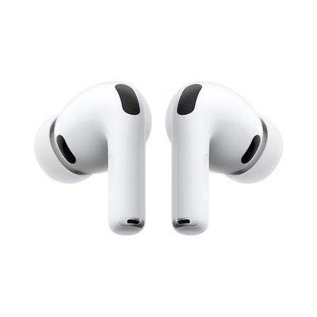
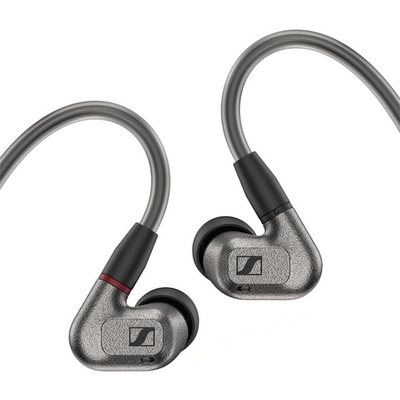
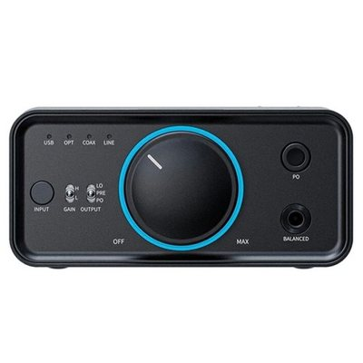
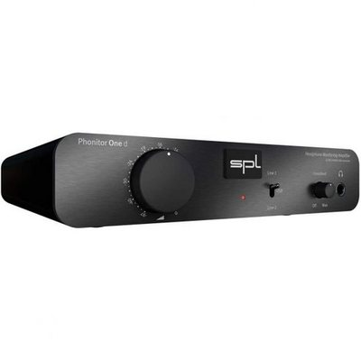
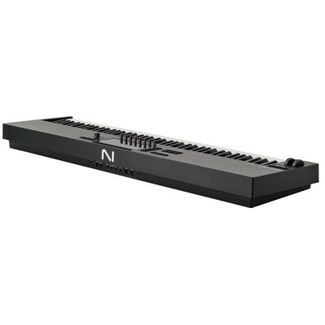
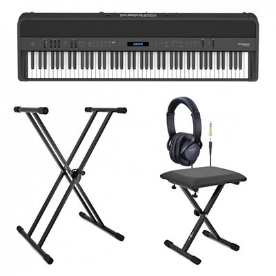
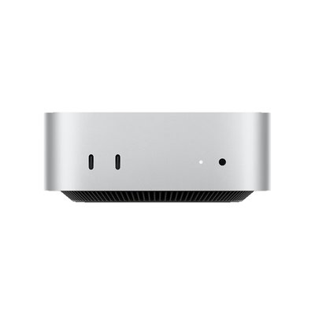
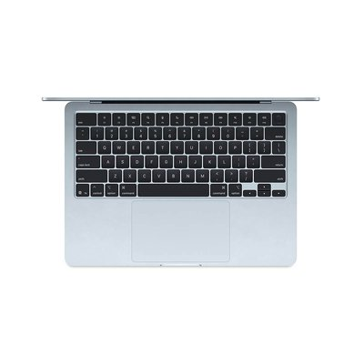
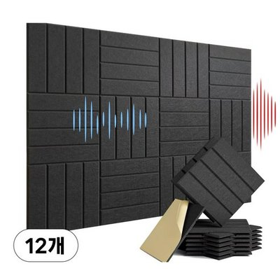

🎧 ヘッドホン入門
MDR-7506 (SONY)
約¥15,000〜20,000
放送・ポストプロダクションの定番。折りたためて、音はニュートラル、雑に扱っても壊れにくい。宅録の最初の1本にも。
密閉型 · 有線 · 3.5mm（6.3mm変換付属）

🎧 ヘッドホンプロ・スタジオ
HD 800 S (Sennheiser)
約¥179,000〜257,000
開放型のリファレンス機。空間の広がりと情報量で、マスタリングの確認や長時間の作業にも向きます。
開放型 · 有線 · 専用アンプ推奨

🎧 ワイヤレスイヤホン入門
AirPods Pro 3 (Apple)
¥42,800
書き出した曲を「普通のリスナーと同じ環境」で確認するための1台。ANCと外音取り込み、空間オーディオ対応。
完全ワイヤレス · ANC · 空間オーディオ

🎧 ワイヤレスイヤホン入門
WF-1000XM5 (SONY)
約¥24,000〜27,000
ノイズキャンセリングの強い定番。移動中の曲チェック用に、LDACで高音質再生もできます。
完全ワイヤレス · ANC · LDAC

🎧 有線イヤホン入門
IE 200 (Sennheiser)
約¥15,500〜24,000
定位が取りやすく、モニター用途でも聴き疲れしにくいカナル型。ミックスの細部を確認するのに向きます。
カナル型 · 有線 · MMCX

🎧 有線イヤホンプロ・スタジオ
IE 600 (Sennheiser)
約¥120,000〜141,000
金属筐体のリファレンス・カナル。細かい定位と質感の確認まで、イヤホンで済ませたいときに。
カナル型 · 有線 · MMCX

🔊 モニタースピーカー入門
HS5 (YAMAHA)
約¥44,000〜54,000（1組）
白いコーンの定番ニアフィールド。中域が正直でごまかしが効かないぶん、小部屋の練習台としても優秀です。
5インチ · アクティブ · 1組（2本）

🔊 モニタースピーカープロ・スタジオ
8030C (GENELEC)
約¥176,000〜209,000（1組）
アルミ筐体の北欧定番。クセが少なく、長く付き合えるニアフィールドとして現場で選ばれ続けています。
5インチ · アクティブ · 1組（2本）

🔊 モニタースピーカープロ・スタジオ
KH 80 DSP (Neumann)
約¥155,000〜213,000（1組）
DSP補正で部屋のクセをソフト側から直せる小型ニアフィールド。デスクトップの近距離でも破綻しにくい。
4インチ · DSP補正 · 1組（2本）

🎙️ マイク入門
SM7B (SHURE)
約¥53,600〜76,000
放送用ダイナミック。吸音していない部屋でも声が太く録れるので、宅録のボーカルやナレーションで定番です。
ダイナミック · 単一指向性（カーディオイド）· XLR

🎙️ マイクプロ・スタジオ
TLM 103 Studio Set (Neumann)
約¥198,000〜235,000
ラージダイアフラム・コンデンサーの定番。硬さのない自然なディテールで、ボーカルの主力マイクになります。
コンデンサー · カーディオイド · EA 1付属 · XLR

🎛️ ヘッドホンアンプ入門
K7 (FiiO)
約¥34,700〜39,700
USB DAC内蔵の据え置きヘッドホンアンプ。高インピーダンスのモニターヘッドホンも、これ1台で鳴らせます。
DAC内蔵 · USB／光／同軸 · バランス出力

🎛️ ヘッドホンアンププロ・スタジオ
Phonitor One d (SPL)
¥170,500
Phonitor Matrixのクロスフィードで、ヘッドホンでもスピーカーに近い聴こえ方に。夜のミックスに効きます。
DAC内蔵 · クロスフィード · PCM 768kHz／DSD 256

🔌 DAC入門
E30 II Lite (TOPPING)
¥13,300
AK4493Sを1基積んだ小型DAC。PCの内蔵出力から一段上げたいときの、いちばん安い選択肢のひとつです。
DAC単体 · USB／光／同軸 · リモコン付属

🔌 DACプロ・スタジオ
ADI-2 DAC FS (RME)
約¥190,000〜260,000
EQとダイナミクスを内蔵したモニタリングDAC。ヘッドホンのクセを補正したり、カーブを借りて確認したりできます。
DAC＋ヘッドホンアンプ · PEQ／Dynamics · USB

🎹 MIDIキーボード入門
KeyLab Essential 61 mk3 (Arturia)
約¥26,800〜31,000
61鍵にAnalog Labと音源が付属。フェーダーとノブはDAWにそのまま割り当てられ、最初の1台で迷ったらこれ。
61鍵 · シンセタッチ · USB／MIDI

🎹 MIDIキーボードプロ・スタジオ
KONTROL S88 MK3 (Native Instruments)
約¥178,000〜201,000
88鍵ハンマーアクションと、Kontakt・DAWをそのまま操作できる統合。ピアノ演奏を入力の中心にするなら。
88鍵 · ハンマーアクション · USB

🎹 電子ピアノ入門
P-145 (YAMAHA)
約¥52,800〜63,800
88鍵・約11kgのポータブル。コンサートグランドの音を内蔵し、USBでMIDI／オーディオ両対応。打ち込みの鍵盤としても。
88鍵 · GHC鍵盤 · スピーカー内蔵 · USB

🎹 電子ピアノプロ・スタジオ
FP-90X (Roland)
約¥230,000〜253,000
PHA-50鍵盤とモデリング音源。タッチの応答が細かく、レコーディングのピアノ入力でも妥協したくないとき。
88鍵 · PHA-50 · スピーカー内蔵

🎚️ オーディオIF入門
Scarlett 2i2 4th Gen (Focusrite)
約¥27,500〜28,600
最初の1台として一番よく選ばれる2in／2out。ドライバーが安定していて、ボーカル録りと配信ならこれで足ります。
2 in／2 out · USB-C · 24bit/192kHz

🎚️ オーディオIFプロ・スタジオ
Babyface Pro FS (RME)
約¥132,000〜154,000
安定性と低レイテンシーの基準。据え置きでも出先でも同じように動き、TotalMix FXはPCを替えてもそのまま使えます。
12 in／12 out · USB · TotalMix FX

💻 PC・Macプロ・スタジオ
Mac mini 16GB/512GB (Apple)
約¥125,000〜
宅録の中心に置く小型デスクトップ。静かで場所を取らず、プラグインを何本も挿しても余裕のある構成です。
Apple silicon · 16GB · 512GB SSD

💻 PC・Macプロ・スタジオ
MacBook Air 13 16GB/256GB (Apple)
¥164,800〜
出先でも同じプロジェクトを開ける1台。ファンレスで静かなので、ボーカル録りの近くに置いてもノイズが乗りません。
13インチ · 16GB · 256GB SSD

🖥️ デスク周り入門
モニターアーム F80 (NB)
約¥3,980〜4,980
画面を浮かせると、モニタースピーカーを耳の高さに揃えやすくなります。机の上が空くぶん、鍵盤も置けます。
17〜32インチ · 耐荷重9kg · クランプ式

🖥️ デスク周り入門
吸音フォーム タワー型 6枚セット (汎用)
約¥2,000〜5,000
壁の反射を減らす最初の一手。マイクの後ろと正面の壁に置くだけで、録った声の「部屋っぽさ」が変わります。
ウレタン · 6枚組 · 両面テープ止め